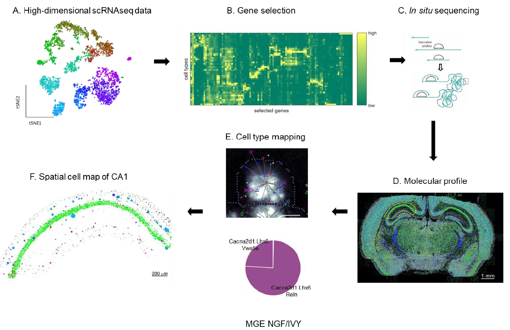
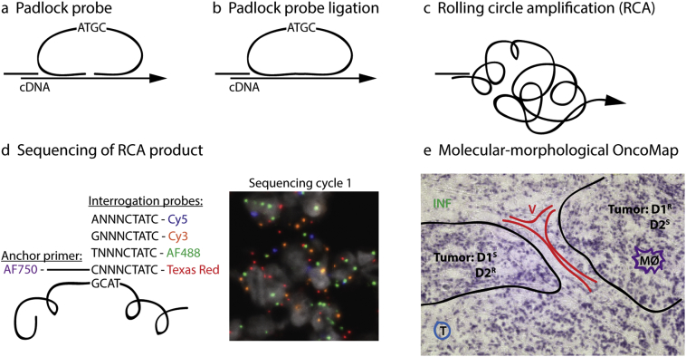
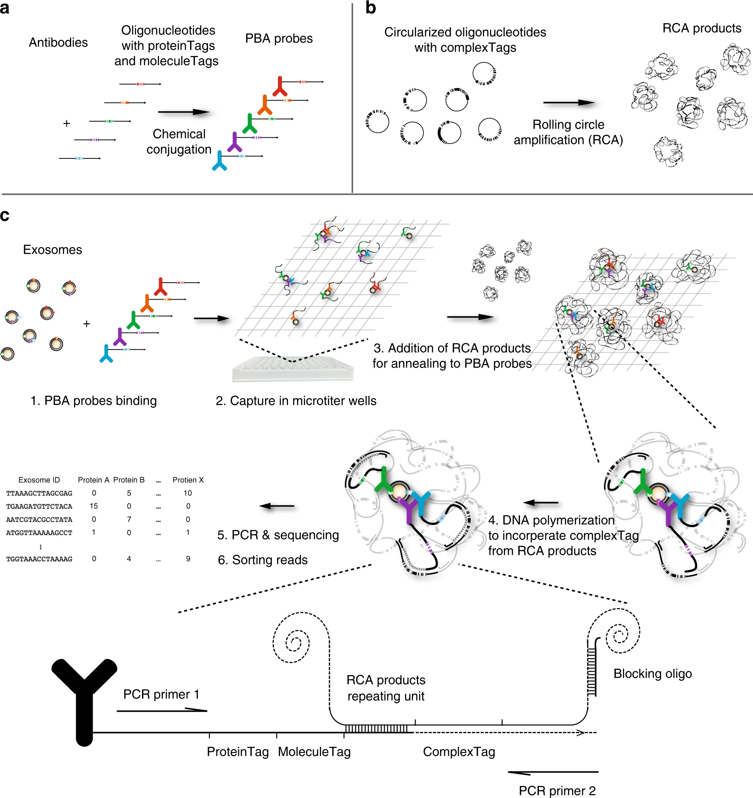
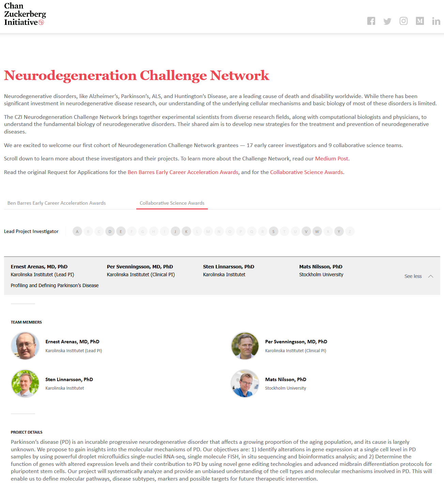

About the lab
Our work is focused on development of novel molecular analysis concept for use in research and diagnostics, with primary focus on infectious and cancer diagnostics. We address development of both fundamental assay architecture and novel devices. Our research is based on a cross-disciplinary approach involving extensive collaboration with scientist ranging from physics and engineering to biomedical and clinical research, and with the ultimate goal of translating the research into industrial products to make the technologies available for the scientific community and hospital labs.
Lab News:
- Nov. 25, 2019 NEWS: Xiaoyan Qian from the lab has successfully defended her PhD at Stockholm University
- Nov. 18, 2019 Original article in Nature Methods on probabilistic cell typing using in situ sequencing
-
Probabilistic cell typing enables fine mapping of closely related cell types in situ
Qian X et al.
Understanding the function of a tissue requires knowing the spatial organization of its constituent cell types. In the cerebral cortex, single-cell RNA sequencing (scRNA-seq) has revealed the genome-wide expression patterns that define its many, closely related neuronal types, but cannot reveal their spatial arrangement. Here we introduce probabilistic cell typing by in situ sequencing (pciSeq), an approach that leverages previous scRNA-seq classification to identify cell types using multiplexed in situ RNA detection. We applied this method by mapping the inhibitory neurons of mouse hippocampal area CA1, for which ground truth is available from extensive previous work identifying their laminar organization. Our method identified these neuronal classes in a spatial arrangement matching ground truth, and further identified multiple classes of isocortical pyramidal cell in a pattern matching their known organization. This method will allow identifying the spatial organization of closely related cell types across the brain and other tissues.
SciLife Lab press release - Oct. 1, 2019 Original article in EBioMedicine on generation of OncoMaps with in situ sequencing in breast cancer
-
Generation of in situ sequencing based OncoMaps to spatially resolve gene expression profiles of diagnostic and prognostic markers in breast cancer
Svedlund J et al.
Our in situ approach spatially revealed intratumoral heterogeneity with regard to tumor subtype as well as to the OncotypeDX recurrence score and even uncovered areas of minor cellular subpopulations. Since ISS-resolved molecular profiles are linked to their histological context, a deeper analysis of the core and periphery of tumor foci enabled identification of specific gene expression patterns associated with these morphologically relevant regions.
- Aug. 26, 2019 Original article in Nature Communications on profiling surface proteins on exosomes
-
 Profiling surface proteins on individual exosomes using a proximity barcoding assay
Wu D et al.
Exosomes have been implicated in numerous biological processes, and they may serve as important disease markers. Surface proteins on exosomes carry information about their tissues of origin. Because of the heterogeneity of exosomes it is desirable to investigate them individually, but this has so far remained impractical. Here, we demonstrate a proximity-dependent barcoding assay to profile surface proteins of individual exosomes using antibody-DNA conjugates and next-generation sequencing. We first validate the method using artificial streptavidin-oligonucleotide complexes, followed by analysis of the variable composition of surface proteins on individual exosomes, derived from human body fluids or cell culture media. Exosomes from different sources are characterized by the presence of specific combinations of surface proteins and their abundance, allowing exosomes to be separately quantified in mixed samples to serve as markers for tissue-specific engagement in disease. - Jun. 7, 2019 Collaborative article with the group of Igor Adameyko investigating cell fate decisions in murine neural crest cells, now published in Science
-
Spatiotemporal structure of cell fate decisions in murine neural crest
Soldatov R et al.
- Apr. 23, 2019 Collaborative article with the group of Martin E Rottenberg in Nature Communications, using in situ sequencing to explore diversity in tuberculosis granuloma
- May. 15, 2019 NEWS: Sibel Ciftci from the lab has successfully defended her PhD at Stockholm University
- Dec 6, 2018 NEWS: Chan Zuckerberg Initiative award for Neurodegeneration Challenge Network to profile and define Parkinson's disease
-

The group of Ernest Arenas has been awarded a grant from CZI to systematically analyze and provide an unbiased understanding of the cell types and molecular mechanisms involved in Parkinson's disease. The project will be performed in collaboration with Per Svenningsson (KI), Sten Linnarsson (KI), and Mats Nilsson (SU).
More information: CZI Neurodegeneration Challenge Network
SciLife Lab press release
About the Department and SciLifeLab:
The Department is mainly located with the other Departments of Chemistry and Life Sciences in the Arrhenius Laboratories for Natural Sciences, which are situated in the northern part of the University Campus at Frescati. Presently more than 300 people are working at the Department of which about 110 are PhD students engaged in internationally highly recognized research covering a broad range of subjects. The Department is also deeply involved in teaching, with courses at all undergraduate levels, including a wide range of Master courses. A close link between the undergraduate program and the research projects has since long been a tradition and a trademark of the Department. Science for Life Laboratory, where many of our researchers are based, is also closely linked to the department.
SciLifeLab is a Swedish national center for molecular biosciences with focus on health and environmental
research. The center combines frontline technical expertise with advanced knowledge of translational
medicine and molecular bioscience. SciLifeLab is hosted by four Swedish universities (Karolinska
Institutet, KTH Royal Institute of Technology, Stockholm University and Uppsala University) and
collaborates with several other universities.
SciLifeLab was established in 2010 and appointed a national center in 2013 by the Swedish government.
More than 100 research groups are associated with SciLifeLab, which is situated at two nodes in
Stockholm and Uppsala.